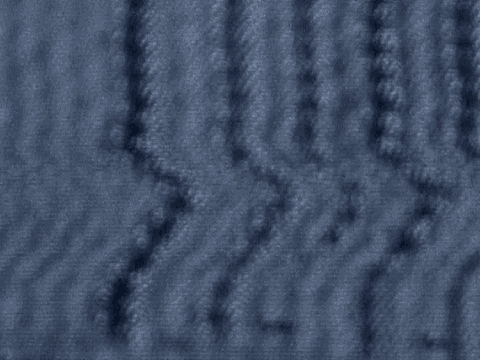

15 deceased victim or victims identified in the particular count.
16 "Knowingly" creating such a risk means that
17 Mr. al-'Owhali was conscious and aware that his conduct in the
18 course of committing the offense might have this result.
19 Mr. al-'Owhali's conduct cannot merely have been the product
20 of ignorance, mistake or accident. Knowledge must be proved
21 like anything else. You may consider any statements made and
22 acts done by Mr. al-'Owhali, and all the facts and
23 circumstances in evidence which may aid you in the
24 determination of Mr. al-'Owhali's knowledge.
25 "Grave risk of death" means a significant and
7244
1 considerable possibility that another person might be killed.
2 In order to find that the government has proven this factor
3 beyond a reasonable doubt, you must unanimously agree on a
4 particular person or a class of persons who were placed in
5 danger by Mr. al-'Owhali's actions.
6 "Persons in addition to the victims" include innocent
7 bystanders in the zone of danger created by the defendant's
8 acts, but do not include other participants in the offense.
9 Your finding as to this statutory aggravating factor
10 must be indicated in the appropriate space in Section II, Part
11 A.2 of the Special Verdict Form.
12 The third statutory aggravating factor alleged by the
13 government with regard to the capital counts is that the
14 defendant committed the offenses under the particular counts
15 after substantial planning and premeditation to cause the
16 death of a person or to commit an act of terrorism.
17 "Planning" means mentally formulating a method for
18 doing something or achieving some end.
19 "Substantial planning and premeditation" means a
20 considerable or significant amount of planning and
21 premeditation.
22 An "act of terrorism" is an act calculated to
23 influence or affect the conduct of government by intimidation
24 or coercion, or to retaliate against government conduct.
25 I'm told I skipped premeditation, which I didn't
7245
1 premeditatively do that.
2 "Premeditation" means thinking or deliberating about
3 something and deciding whether to do it beforehand.
4 To find that the government has satisfied its burden
5 of proving beyond a reasonable doubt that Mr. al-'Owhali
6 engaged in substantial planning and premeditation either to
7 cause the death of a person or to commit an act of terrorism,
8 you must unanimously agree on the particular object of the
9 substantial planning and premeditation either to cause the
10 death of a person, to commit an act of terrorism, or to do
11 both. Your finding as to this statutory aggravating factor
12 must be indicated in the appropriate space in the Section II,
13 Part A.3 of the Special Verdict Form.
14 The fourth and final statutory aggravating factor
15 alleged by the government with regard to the capital counts is
16 that the defendant intentionally killed or attempted to kill
17 more than one person in a single criminal episode.
18 To establish the existence of this factor, the
19 government must prove beyond a reasonable doubt that
20 Mr. al-'Owhali intentionally killed or attempted to kill more
21 than one person in a single criminal episode. You must
22 unanimously agree on the particular actual or intended victims
23 or a class of intended victims in order to find that this
24 factor has been proved beyond a reasonable doubt.
25 "Intentionally killing" a person means killing a
7246
1 person on purpose, that is: Willfully, deliberately, or with
2 a conscious desire to cause a person's death (and not just
3 accidentally or involuntarily).
4 "Attempting to kill" a person means purposely doing
5 some act which constitutes a substantial step (beyond mere
6 preparation or planning) toward killing a person, and doing so
7 with the intent to cause a person's death. You may not find
8 that the defendant attempted to kill a person who was actually
9 killed.
10 "A single criminal episode" is an act or series of
11 related criminal acts which occur within a relatively limited
12 time and place, or are directed at the same person or persons,
13 or are part of a continuous course of conduct related in time,
14 place, or purpose.
15 You may, but are not required to, infer that a person
16 of sound mind intended the ordinary, natural, and probable
17 consequences of his knowing and voluntary acts. Thus, you may
1